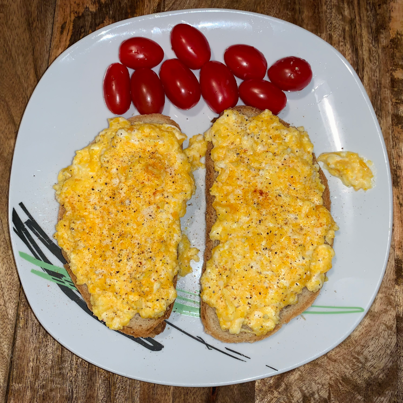

Creamy egg sandwich

Tired of eating eggs the same way all time time?
With this recipe you can prepare your eggs so tasty you won't believe it.
As long as you know how to cook eggs, with a bit of extra patience you will have no issues with this one!
Ingredients
- Eggs
- Butter
- mayonnaise
- Bread of your choice
- Cherry tomatoes
- Salt
- Black or mixed pepper
- Chilli powder
Recipe step-by-step
- Add a bit of butter to a pan, put it on high heat
- Crack your eggs into a bowl on the side
- Once your butter is bubbling, add your eggs into the pan
- Add in some salt and bring the heat to a very low level
- Slowly cook with constant scrambling (if your eggs are sticking to the pan, the heat is too high!)
- Once your eggs start to look good, add in a teaspoon of mayonnaise for extra creaminess
- Now it's usually a good idea to turn off the stove
- With the stove being off, keep scrambling on the residue heat until the mayonnaise blends in
- Once your eggs look creamy (but not runny), you can take the pan off the stove
- Get some bread slices, and divide your creamy eggs on top of them
- Sprinkle a bit of black pepper and/or some chilli powder for a better taste
- Add in your tomatoes as a side
- Serve!
This recipe might be harder to get right the first time, but everytime you go for it you will develop a better feel for it
The key for a tasty structure and creaminess is patience. They need to be cooked very slowly on minimal heat.
Good luck and enjoy!